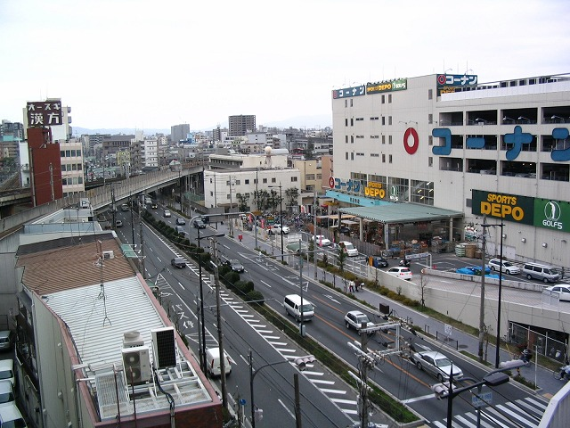
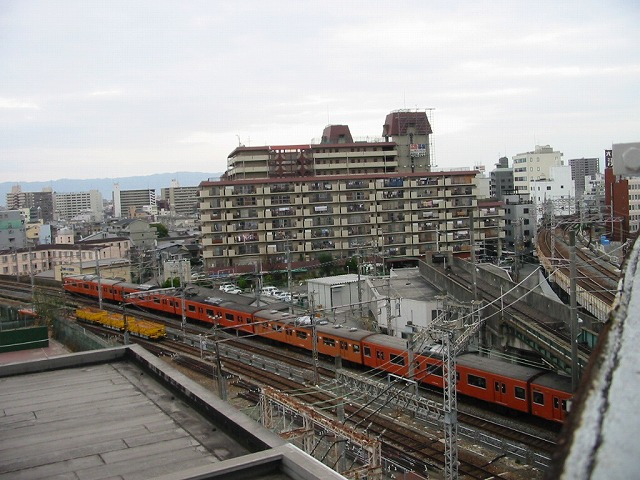

杉本町で恥ずかしい撮影を終えた私たち。

２００７年もこんなことしてまうんやろか。
もう市大付近での撮影は終了や。
あー鉄分採り過ぎや。帰ろ帰ろ。
最近地蔵がブームなのよね、あたしたち。
あー羨ましいなあ。生粋の関西人やったら地蔵盆のお菓子たべてたんやろなあ。
新興住宅地育ちのウチには無い思い出やなあ。
ああもうまた鉄夫の写真収集が始まった。拝むだけでええがな。なんで写真とるかなモウ。
鉄夫「大阪中の地蔵を制覇や！」
（ちなみにこの日、約１０地蔵ＧＥＴ）
はーやっと天王寺近くまで戻ってきた。
地蔵も鉄道もお腹一杯やー
鉄夫「ここが、”んな無茶なシリーズ”第一弾や！」
なんじゃそのシリーズ！ 大阪の辺境シリーズも第一弾しか取材してへんのに、また新しいシリーズに手ぇ出すな！
鉄夫「第一弾、”こんな歩道橋、無茶やがな！” 鉄子、行けぃ！」
ひ～～ これが歩道橋？ のぼれってか～ うへー
途中で息継ぎしてやっと登った！ 隣のビルの六階と同じ高さ。んな無茶な！
鉄夫「ここは天王寺バイパス。人も渡れるようになっとる」
西向：阿倍野方面

東向：阪和線とコーナン
ここってもしかして、すんげー鉄スポットでは？？？
鉄夫「それ、その右端の阪和線の単線部分。関空快速・紀州路快速が通る線。
そう、上下両方通るんですが、関西本線と交わったり、特に下り線は阪和線の上りと交差したりと
大変ややこしいのだがよく上手いこと走らせておるな、 と思うわけです。」
鉄夫何イッテルノ？
どや！このマンション！どのお部屋も完璧トレインビュー！
【不動産情報】
『ターミナルマンション朝日プラザ天王寺』 大阪市阿倍野区 天王寺町北１丁目』
価格:980万円 専有面積:73.71平米
間取:３ＬＤＫ 築年数:昭和５３年
最寄駅:ＪＲ環状線 寺田町駅
７３平米で一千万足らず！北京部長、帰国したら行っとけ！
天王寺バイパスでカメラを構える中年夫婦。クリスマスのムード０％。別のテンション１００％？
よしゃーなんか古い車両きた。撮影や～パシャ！よっしゃー最後尾もパシャっ

なんか向こうで鉄夫が手招きしてます。何騒いでんねや？
鉄夫「おいおい！今のお前撮ったか！！オレ撮り損ねてもた！1だよ、１！１０３－１」
北京か尼の怨念か。よくぞここで103-1に出くわしたもんだ。
これでクリスマス杉本町ツアーは終了です。
ちなみにこの夜、鉄子は列車の夢にうなされました。やりすぎやちゅーねん
都島